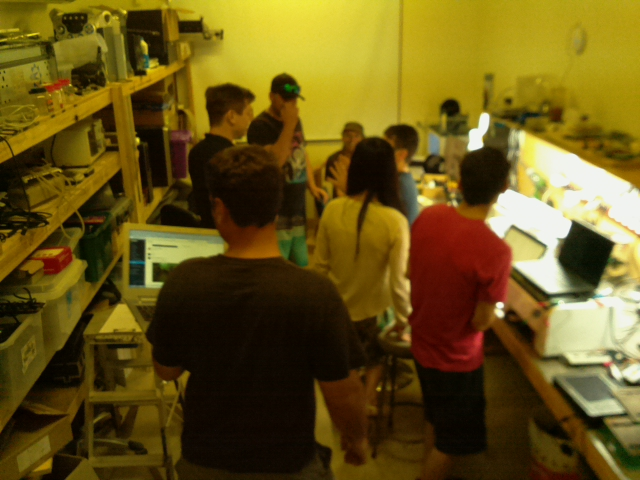

What we offer
3D Printing

We have a variety of printers and people with lots of experience 3D printing.
Sewing

Feeling the need to create? Our industrial Sewing machines and overlockers are waiting to connect your cool threads.
Raspberry Pi

Get started with linux using a Raspberry Pi. From home theatre to home automation and voice control like in the movies, do it all in one of our customised Rpi workspaces.
Where
open night
Open nights are for everyone!
To participate in one of our Thursday nights all you need to do is turn up!
Open to the public at 5:30pm - till late...
We will give you a tour of the facilties and you will most likely get to see some makers is their natural habitat. We usually pass the hat around at some stage and order pizza to fuel the engines. Once you have signed in ( feel free to add you email if you want to join out slack channel or create@themakers.org).
We have a limited number of Raspberry Pi / SOC workstations where you can pug into a monitor and have power and ethernet at your disposal.
Also available for use on Thursdays is our workbench with soldering and most hand tools.

Dont worry if it looks a little crowded we have another two rooms and an undercover workspace for the more noisy / dirt operations 😃.
Subscriber benefits
Our community is just like any other, to get the most out of it you need to put a little into it yourself. For access to larger machinery or the maker space and tools outside of Thursday nights, you either need to be a member or a subscriber.
For a small fee of $25 per month you can become a subsciber, you get acces to all of the equipment and access to the makerspace as long as there is a duty member onsite. This usually is between 8 to 5 most week days, as well as some weekends. Afterhours can be arranged, no problem!
Items available:
- 3D Printers
- CNC Router / Engraver / PCB mill
- Vinyl cutter
- CRO / DSO
- Metal Mill/Lathe combo
- Laser Cutter*
*note: One on route and possible access via a local private one.
Become a Member
There are many membership benefits that include everything a subscriber has access to as well as voting rights and first access to work generated through theMakers.org. Memebership is paid per financial year (or part remaining) calculated at $25 per callendar month.